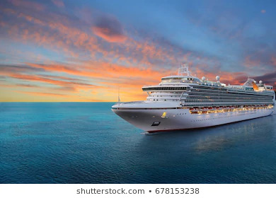
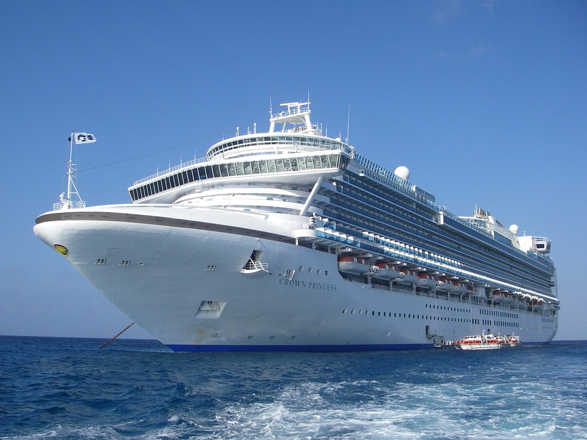
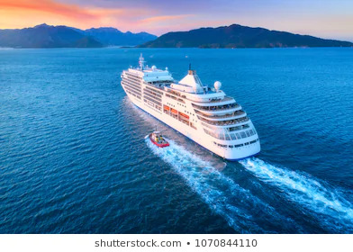
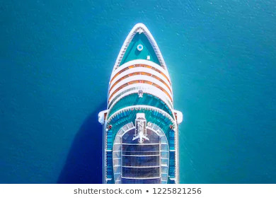

Vários destinos, uma viagem
Descubra o mundo a bordo.
Conheça ideias de roteiros, paisagens e experiências para sua próxima viagem de cruzeiro.
Vida a bordo
Uma viagem com espaço para vários planos
As atividades e os serviços dependem do navio e do roteiro escolhidos.
- Bares e restaurantes
- Atividades ao ar livre
- Entretenimento para famílias
- Equipe e serviços de bordo
Roteiros para conhecer
Destinos de cruzeiro
Consulte as operadoras para disponibilidade, itinerários, datas e valores atualizados.

